Premium K-Tip Hair Studio
Invisible K-Tip Extensions, Tailored Entirely to You.
At RSS Extensions, every install is built around your hair — your density, your texture, your color, your goals. Using 100% virgin, single-donor human hair and a meticulous Invisible K-Tip method, the result is hair that moves, blends, and feels like yours.
Book ConsultationCelebrities trust Premium hair to maintain an effortless, perfect appearance.
Uncompromising Quality
100% virgin, single-donor human hair. Never chemically processed. Soft, shiny, and reusable for years.
Invisible K-Tip Method
Micro keratin bonds that vanish into your hair. No shedding, no visible bonds, no damage to your natural hair.
Personalized to You
Custom color, density match, texture match, cut, and blend — every detail handled in-house, by me.
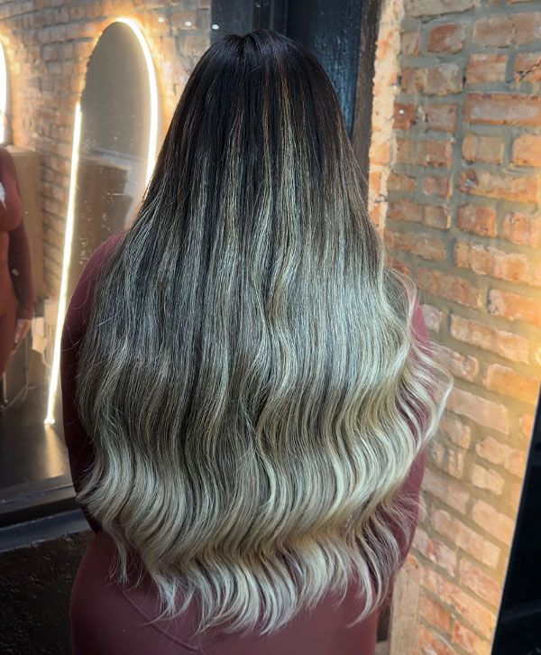
The Method
Benefits of the Invisible K-Tip Method
- Completely undetectable — even worn up or in a ponytail
- Lightweight micro-bonds that won’t pull, tug, or weigh you down
- Safe for fine, sensitized, and shorter hair
- Color your roots and lengths freely between appointments
- Full 360° movement — wash, brush, sleep, and style with ease
- No metal, no glue, no damage to your natural hair
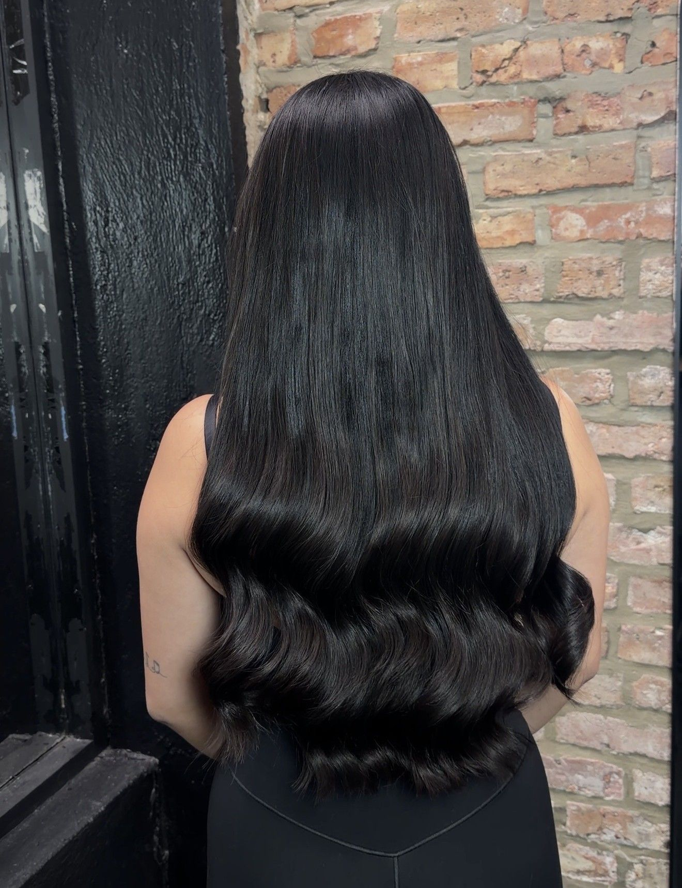
The Hair
Benefits of Our Premium Hair
- 100% virgin human hair — single-donor, ethically sourced
- Never chemically processed before reaching you
- Custom colored in-house to match your exact tones and dimension
- No silicone coatings — no surprise shedding once it washes out
- Reusable for multiple installs when properly maintained
- Holds shine, softness, and color install after install
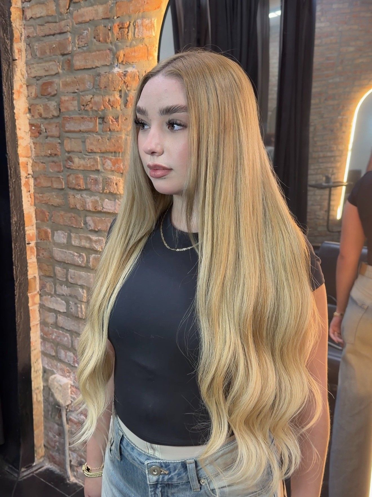
The Detail
Why Our Invisible K-Tips Stand Out
- Hand-placed micro keratin bonds that lay flat against your scalp
- Optimal weight per strand — never overloads fine or thin hair
- Density, texture, and tone matched to you, every time
- Bonds disappear — even in ponytails, updos, and close-ups
- Customized placement based on your haircut, layers, and lifestyle
- Built to grow out beautifully — not just look good on day one
Premium hair + Invisible K-Tip method = Hair you’ll forget isn’t yours
For the ultimate hair extension result.
When ethically sourced virgin hair meets a meticulous, tailored install, the result is hair that moves like yours, looks like yours, and lasts as long as you want it to. Every strand is hand-placed. Every color is mixed for you. Every install is built around your hair — not the other way around.
Have you ever left a hair extension appointment feeling…
We hear these stories from new clients every week.- Like the bonds were too heavy and pulling at your scalp
- Headache-ridden from improperly weighted strands
- Frustrated when the hair tangled the moment the silicone washed out
- Itchy and irritated from product build-up at the bonds
- Disappointed as your “premium” hair turned frizzy and dry
- Unable to sleep because metal beads dug into your scalp
- Self-conscious because the bonds were visible the second you tied your hair up
- Like the color almost matched — but not quite
- Like the sides and crown of your head never fully blended
You’ll never feel that way with RSS Extensions.
And so much more.- Lightweight micro keratin bonds — zero scalp tension
- 100% virgin hair that stays soft and shiny without silicone
- Premium keratin that’s safe for sensitive scalps
- Full 360° movement — sleep, wash, brush, and style with freedom
- Color, density, and texture matched to your hair exactly
- Bonds invisible from every angle — including ponytails and updos
- Reusable hair you can wear install after install
- An install built around your haircut, your lifestyle, and your goals
Three Feature Callouts result.
Reusable Hair
High-quality virgin hair that can be re-installed again and again when properly cared for.
Low Maintenance
Maintenance only every 3–4 months. No daily fuss, no constant retouching.
Lifelong Softness
Premium single-donor hair that holds shine, color, and movement for the long haul.
Hi, I’m Rosaisela.
I’m the founder of RSS Extensions and the hands behind every install. I started doing extensions in October 2024 because I wanted to give other women the same confidence transformation I felt the first time I wore mine.
As a Mexican stylist working out of Studio Privé in Logan Square, I welcome every hair type, density, texture, and color. Your install will never be one-size-fits-all — it’s built for you, by me, from the consultation forward.
Book ConsultationPricing
One All-Inclusive Price. Every Detail Handled
RSS Extensions doesn’t believe in surprise add-ons. Every install is custom-quoted based on your length, density, color, and goals — and your total always includes everything you need from start to finish.
Every install includes:
- Premium virgin K-Tip hair
- Full installation
- Custom color matching and toning
- Cut and blend tailored to your style
- Final styling
Consultation pricing:
- Virtual consultations — complimentary
- In-person consultations — $100, credited in
full toward your service when you book
Testimonials
People love our hair
extensions.
“I absolutely love my hair and get compliments all the time. The blend is so natural and lightweight, it feels like my real hair. Thank you Rosy for making the process so comfortable and worth every penny.”
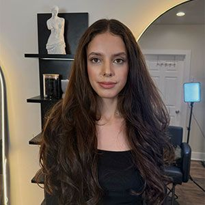
McKenzie Morgan“The quality of this hair is truly unmatched. My extensions look seamless, soft, and natural. Thank you for creating such an amazing transformation.”
“I’m seriously obsessed with my hair. Everyone keeps asking where I got my extensions because they look so natural. You’re truly amazing at what you do.”
“I feel like a completely different person with this hair. The extensions are so lightweight that I forget I even have them in. I already know I’ll be coming back.”
“Thank you for bringing my long hair back for such a special occasion. Everything blended perfectly and felt like it was naturally mine. Your attention to detail makes all the difference.”
My Work
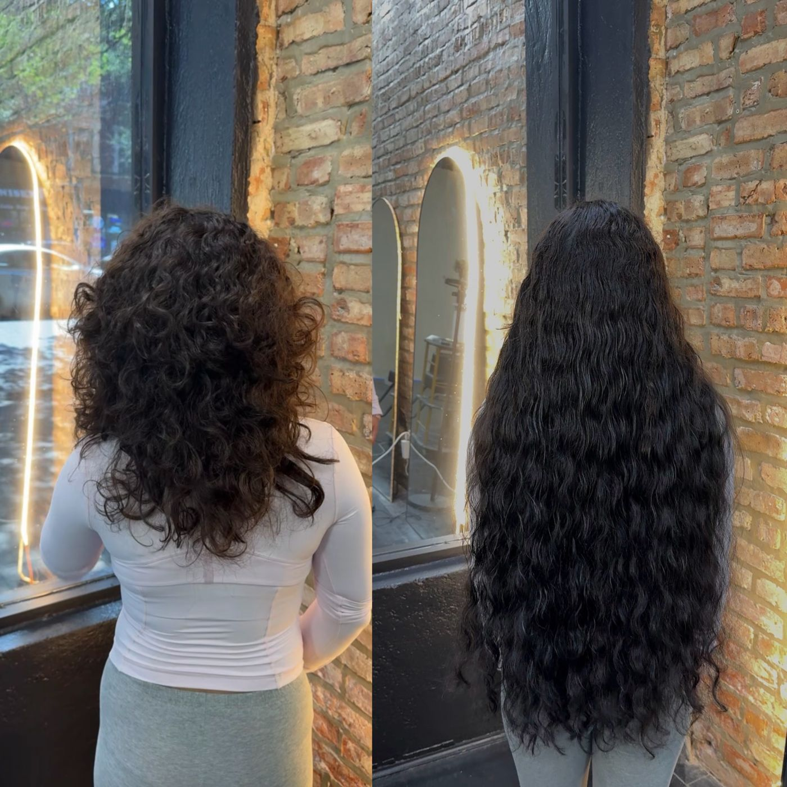
BeforeAfter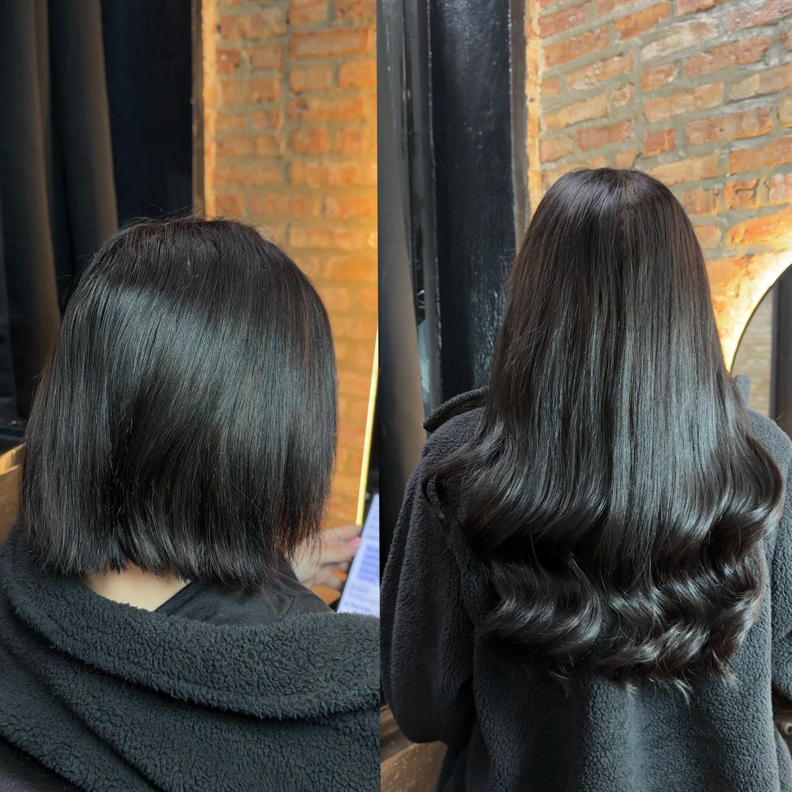
BeforeAfter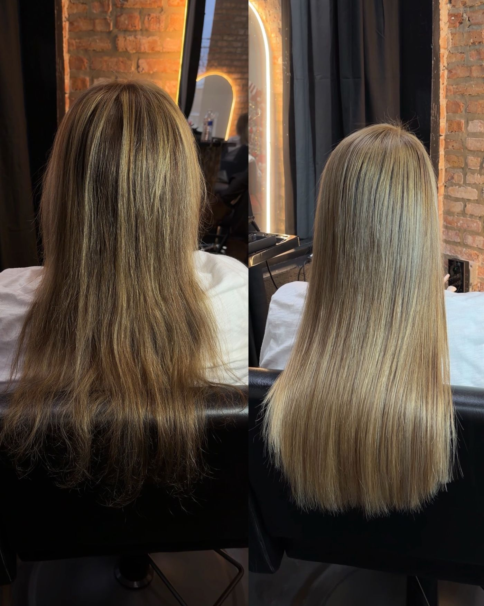
BeforeAfter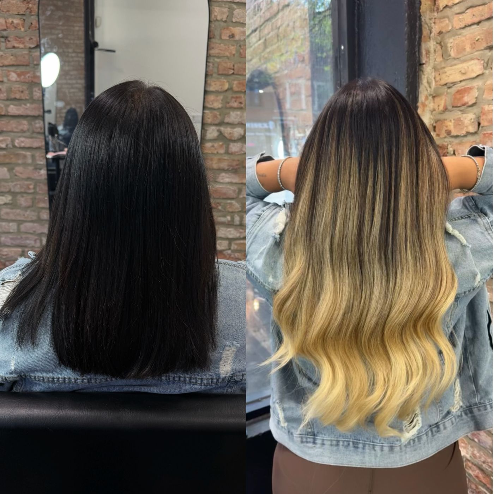
BeforeAfter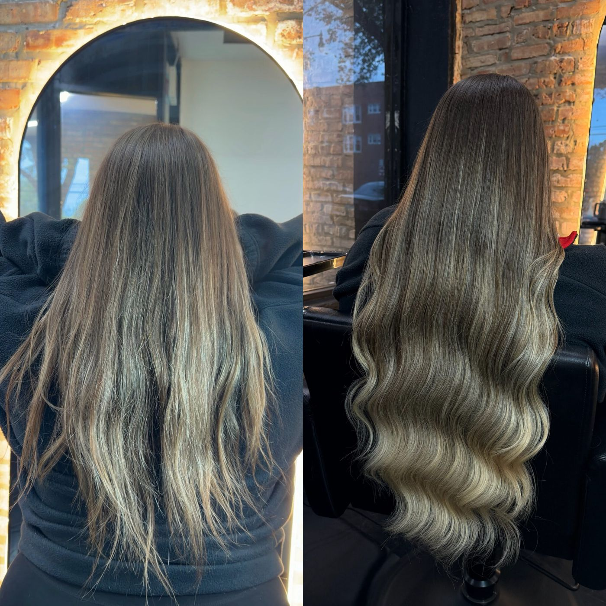
BeforeAfter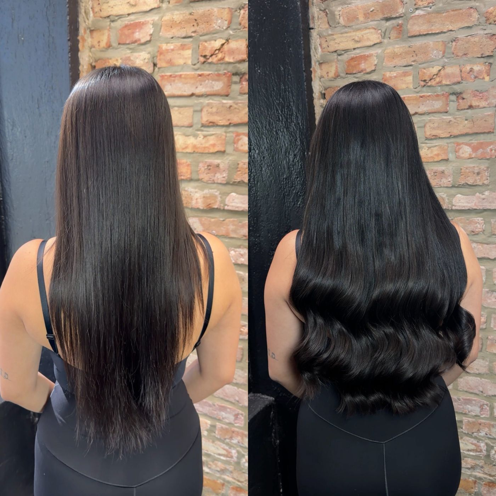
BeforeAfter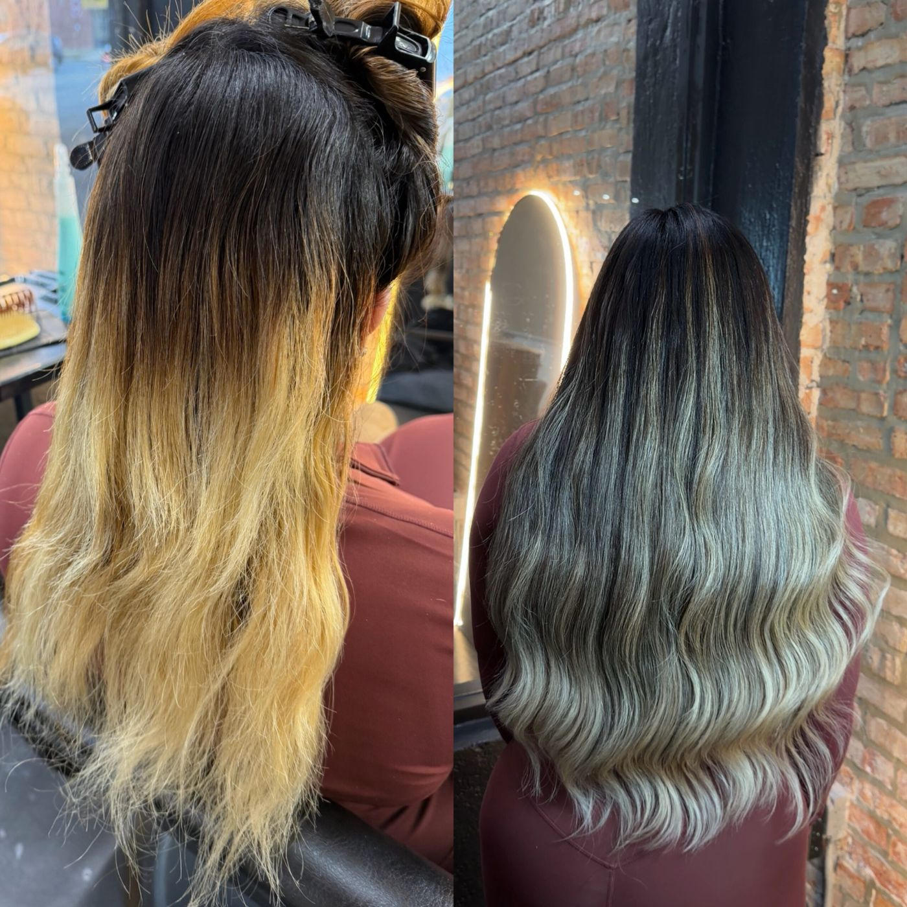
BeforeAfterThe Best Hair of Your Life
Starts With a Conversation.
Tell me about your hair, your goals, and the look you’re chasing — I’ll build the install around you
Book ConsultationWhat type and quality of hair do you use?
RSS Extensions uses only 100% virgin human hair — single donor, ethically sourced, and never chemically processed before reaching you. Our hair is reusable, holds color beautifully, and stays soft install after install.
How many grams of hair will I need?
That depends on you — your natural density, your haircut, the fullness you’re after, and the length you want. We’ll determine the right amount together at your consultation, so you’re never paying for hair you don’t need.
Will K-tips work with my hair type and density?
For most clients, yes — but not every method is right for every head. At consultation, I evaluate fine hair, thinning areas, short layers, curly and textured hair, and any scalp sensitivity or alopecia. If invisible K-tips aren’t the right fit, I’ll tell you honestly.
Can the extensions be custom color matched?
Always. Every install includes multi-tonal color matching, dimension matching, texture matching, and a final blend to your exact haircut. No off-the-shelf shades.
How long do K-tips last before maintenance or removal?
Most clients wear their K-tips comfortably for 3–4 months between maintenance appointments. With the right brushing routine and home care (which I’ll walk you through), your hair will look beautiful from week one to month four.
Can the hair be reused?
Yes. Our virgin hair is high enough quality to be reused for future installs — meaning your investment can carry you through multiple seasons of beautiful hair.
Will the bonds be visible?
No. Our Invisible K-Tip technique is specifically designed to disappear into your hair — even when worn up, in a ponytail, or photographed close-up. Density and placement are mapped to your head so the bonds blend completely.
How long does the installation appointment take?
Anywhere from 3 to 6+ hours depending on grams installed, color customization, and the cut and blend needed. You’ll receive an accurate time estimate after your consultation.
What’s included in the total price?
Everything: the hair, the installation, custom coloring, cut and blending, and final styling. Maintenance appointments are scheduled separately.
What products should I avoid afterward?
Avoid heavy oils, silicone-heavy products, and sleeping with wet hair. I’ll send you a personalized aftercare guide and recommend the exact products that protect your install longest.
What’s your deposit and cancellation policy?
Appointments are secured with a 50% non-refundable deposit, which goes toward your service total. Because all extension orders and custom color matching are tailored specifically to each client, deposits are non-transferable and non-refundable. We kindly ask for at least 48 hours’ notice for any rescheduling requests. Reschedules made with less than 48 hours’ notice may be subject to a rescheduling fee. Same-day cancellations or no-shows will result in forfeiture of the deposit.
How should I prepare for my appointment?
Please arrive with clean, completely dry, straightened hair and no oils on the scalp. Due to the nature of our luxury extension services and scheduling, we ask that no extra guests attend appointments. We allow a 15-minute grace period; after that, a late fee may apply or the appointment may need to be rescheduled.
Can I see healed results, not just fresh installs?
Absolutely. Ask to see growouts, re-installs, and maintenance results — that’s where the quality of the work really shows. I’m happy to share examples at your consultation.
Book Here
A 30-min private session where you get the chance to ask me everything and anything!
$60
Book a 1:1 call with me